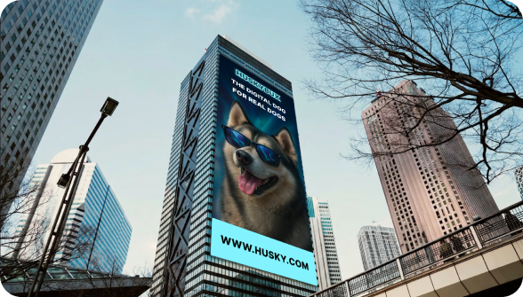
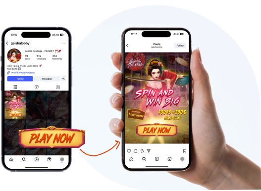
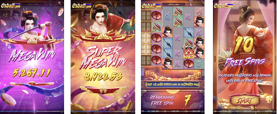
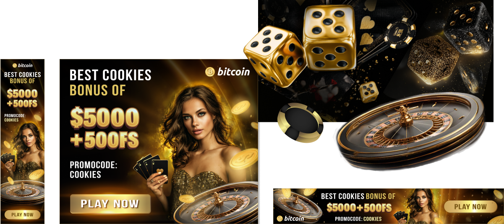

A static banner for Times Square, created as part of an advertising campaign in the crypto industry.

Development of a static advertising banner for placement on a screen in Times Square, aimed at promoting a cryptocurrency token. The main task was to create a visual adapted to the large-scale urban space and dynamic advertising environment. The design met the requirements of the brand and style of the crypto industry, with an emphasis on high visual communication and attracting the attention of an international audience.
Times Square is a space where global brand advertising competes for the attention of millions of people every day. Placing the project in such an environment has become an indicator of its scale and effectiveness.
While working at a marketing agency, I designed 300+ banner creatives for Meta and various digital advertising platforms in the crypto and Web3 industry. The works presented below are adapted samples that reflect my visual style, typography choices, and approach to scalable ad design, while adhering to NDA limitations.
A collection of marketing creatives for online games and casino platforms, including social media banners,
adaptive display ads, and performance-driven visual content.
Designs created for i-gaming brands
with a focus
on engagement, clarity, and platform-specific adaptation.



In addition to banner design, I produce short video ads with basic motion and animation, tailored for use across Meta and other digital platforms.